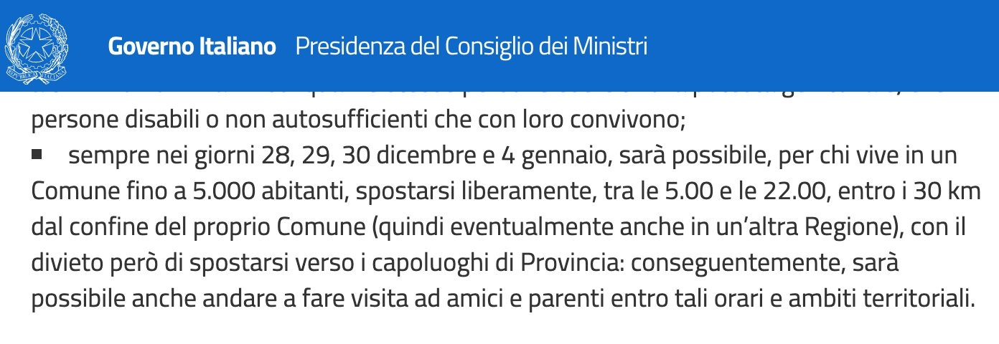

Il decreto “di Natale” in chilometri
Il decreto legge numero 172 del 18 dicembre 2020 - detto in maniera un po’ fastidiosa "di Natale" - definisce delle misure urgenti per le festività natalizie e di inizio anno nuovo.
In questo si legge:
nei giorni 28, 29, 30 dicembre 2020 e 4 gennaio 2021 si applicano le misure di cui all’articolo 2 del medesimo decreto del Presidente del Consiglio dei ministri 3 dicembre 2020, ma sono altresì consentiti gli spostamenti dai comuni con popolazione non superiore a 5.000 abitanti e per una distanza non superiore a 30 chilometri dai relativi confini, con esclusione in ogni caso degli spostamenti verso i capoluoghi di provincia.
Comuni
la mappa è disponibile per i comuni fino a 5000 abitanti
| MAPPA | COMUNE | ABITANTI | SUPERFICIE (km²) | PROV |
|---|
Risposte alle domande più frequenti
2. Tutto questo ha valore legale?
3. Da dove vengono i dati?
4. Perché la distanza è in linea d'aria?
5. Se è un perimetro dal confine perché sono circonferenze?
6. Cosa sono le macchie "rosse" nelle mappe?
7. In alcuni casi le aree in rosso sono più di una
8. Perché le aree vanno anche oltre il confine regionale?
9. Posso farlo anche io?
Come è nata questa idea?
quando abbiamo visto il decreto ci siamo subito interrogati come andasse interpretato e, dialogando assieme, abbiamo ragionato come creare le mappe.
Qui trovi tutta la storia e queste conclusioni:
Per noi questo è stato un momento di confronto, di divertimento, di imparare l’uno dall’altro e di condividere questa storia con chi ci sta leggendo.
Di certo non è nostra intenzione quello di invitare gli abitanti dei "piccoli Comuni" a muoversi liberamente: crediamo sia fondamentale il buon senso.
Forse siamo un po’ troppo pignoli, ma pensiamo che quando le parole non sono sufficienti per spiegare i concetti, forse è opportuno fornire strumenti come le mappe per far capire cosa si
torna elenco domande
Tutto questo ha valore legale?
ci siamo limitati ad una interpretazione del decreto legge.
Il consiglio è quello di guardare le FAQ del Governo o di sentire le forze dell'ordine.
torna elenco domande
Da dove vengono i dati?
Tutti i dati provengono da fonti ISTAT.
Abbiamo usato
- Limiti Amministrativi
- Informazioni Demografiche sulla popolazione
entrambi al primo gennaio 2020.
torna elenco domande
Perché la distanza è in linea d'aria?
Abbiamo riflettuto a lungo sulla frase del decreto legge "sono consentiti gli spostamenti dai comuni con popolazione non superiore a 5.000 abitanti e per una distanza non superiore a 30 chilometri dai relativi confini"
e su questa slide presentata dal Giuseppe Conte

Anche se a valere è il decreto legge, dichiarare "distanza non superiore a 30 chilometri dai relativi confini", vuole proprio dire creare un perimetro a 30km dal confine comunale e quindi in distanza aerea
torna elenco domande
Se è un perimetro dal confine perché sono circonferenze?
Questa è una questione puramente tecnica.
La distanza per creare il perimetro dal confine è stata fatta usando l'algoritmo buffer presente in ogni software GIS.
Il calcolo del perimetro, più aumenta, e più la geometria assume una forma regolare.
Questo piccola animazione fatta da Salvatore spiega la questione

Nella mappa abbiamo inoltre aggiunto un righello (lo trovi sotto i bottoni per lo zoom) che permette di calcolare le distanze: provalo!
torna elenco domande
Cosa sono le macchie "rosse" nelle mappe
al clic sull'area viene spiegato: in ogni caso si tratta dei confini del Comune selezionato: quindi i punti di partenza.
torna elenco domande
In alcuni casi le aree in rosso sono più di una
Ci sono molti comuni italiani che hanno enclave ed exclave: queste fanno parte del confine comunale e quindi vanno prese in considerazioni.
Ci sono molti altri casi particolari, il consiglio è di leggere il nostro articolo pubblicato su Medium.
torna elenco domande
Perché le aree vanno anche oltre il confine regionale?
inizialmente avevamo calcolato tutto sottraendo anche i confini regionali (e quelli delle province autonome), poi abbiamo letto attentamente le FAQ del Governo ed abbiamo scosperto che, invece, che la regola permette di andare oltre confine.
Qui uno screenshot

torna elenco domande
Posso farlo anche io?
Certo! È più complesso spiegarlo che farlo.
Tecnicamente si tratta di:
- estendere i dati della popolazione alla tabella dei confini comunali
- filtrare i comuni fino a 5000 abitanti
- creare un buffer a 30km dai confini
- sottrarre (clip) i poligoni dei comuni capoluogo di provincia
- e dei confini nazionali
Abbiamo raccontato tutto sul nostro articolo e rilasciato su GitHub
torna elenco domande
Inserire la mappa di un comune nel tuo sito
Se vuoi inserire la mappa di un comune nel tuo sito, puoi usare il codice di embedding sottostante.
Basta un copia e incolla e poi sostituire - due volte - il codice ISTAT del comune a 6 caratteri, con quello di tuo interesse. In questo esempio il codice è "001002", ovvero quello del comune di Airasca.
Qui puoi testare la cosa.
<iframe height="400" src="https://ondata.github.io/30cappa/embed.html?id=001002" style="width: 0; min-width: 100% !important; border: none;" frameborder="0"></iframe><br> <a href="https://ondata.github.io/30cappa/mappa.html?id=001002" target="_blank">Schermo intero</a>
Schermo intero